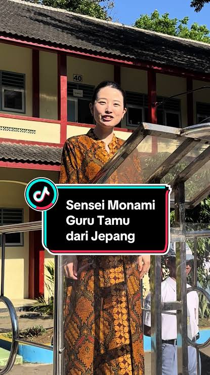

Bahasa & Media
PENDAFTARAN EKSTRAKURIKULER
SMKN Tengaran punya 15 ekstrakurikuler. Jelajahi tiap dunia, baca ceritanya, lalu pilih yang paling cocok denganmu.
CARA IKUT
Jelajahi ekskul
Baca kegiatan dan skill yang kamu dapat di tiap ekskul.
Isi data diri
Lengkapi formulir. Progres terlihat di bar bawah formulir.
Kirim & selesai
Kamu resmi terdaftar di ekstrakurikuler pilihanmu.
TENTANG EKSTRAKURIKULER
Setiap kegiatan dirancang untuk membangun kepercayaan diri, keterampilan, dan pengalaman yang berguna di sekolah maupun dunia kerja.
Lihat semua pilihan
LANGKAH 1 DARI 2
Pilih kategori, lalu buka kartu untuk melihat detailnya.
LANGKAH TERAKHIR
Isi data dengan benar. Kolom yang salah akan ditandai merah.
0% formulir terisi benar
PENDAFTARAN BERHASIL